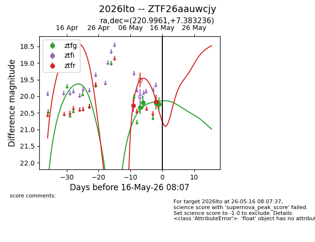
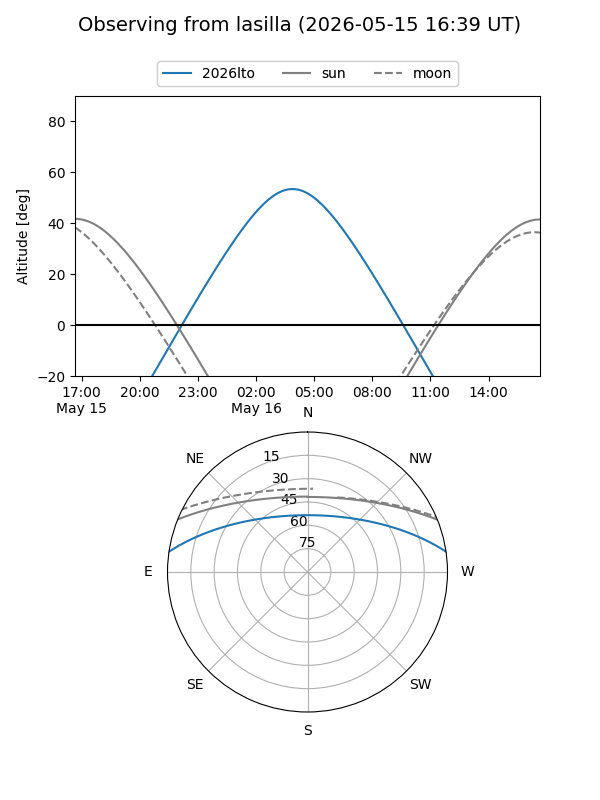
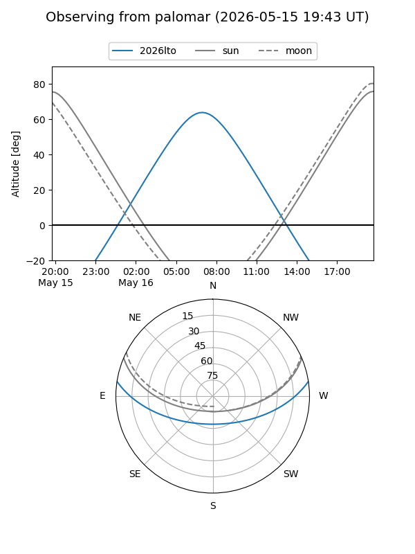
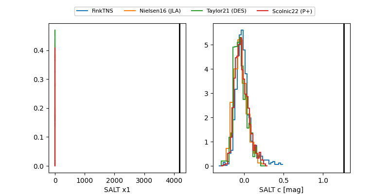

2026lto
Target 2026lto at 2026-05-16 08:09
Aliases and brokers:
FINK: link
Lasair: link
ALeRCE: link
TNS: link
YSE: link
alt names
ZTF26aauwcjy (ztf,fink_ztf)
2026lto (tns,yse)
Coordinates:
equatorial (ra, dec) = 220.9961,+7.38324
equatorial (HMS+DMS) = 14:43:59.07,+07:22:59.65
galactic (l, b) = (1.6274,+56.81456)
Flags:
Photometry:
last ztfg=20.23, ztfr=20.16
4 ztfg, 2 ztfr detections
Lightcurve

Visibility


Additional plots
